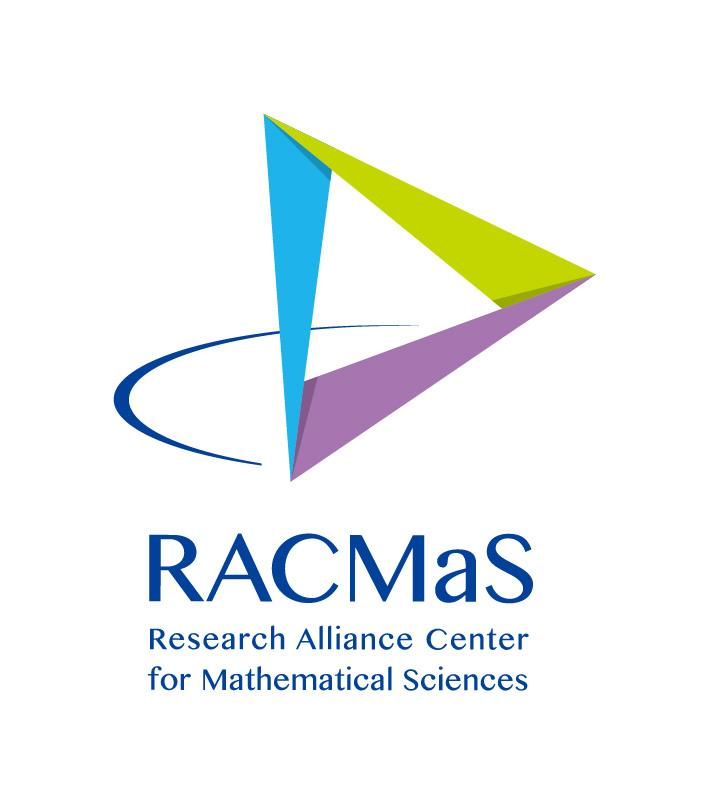
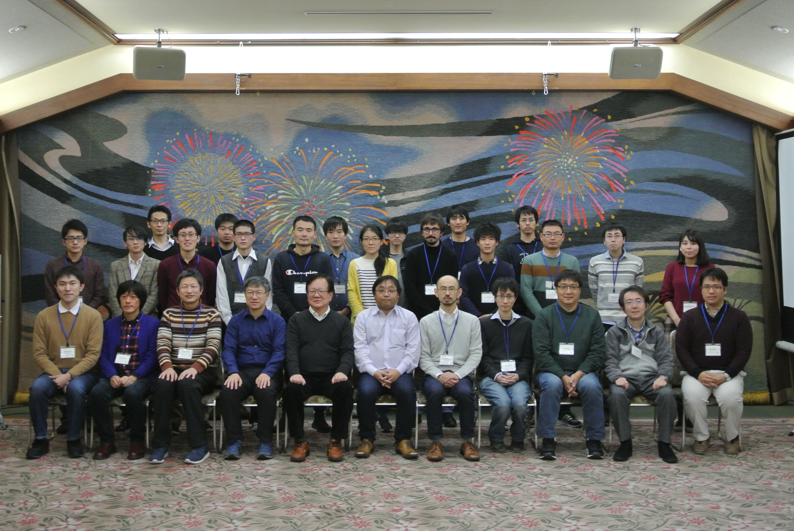

Sendai Logic School 2018
- 

- SLS 2018
- Home
- Conference Venue
- Accommodation
- Program
- Contact Info
- Committee
- Organising Committee
- Lectures and Short Talks
- Important Dates
- Submission
- Advance Registration is required
- Links
SLS 2018
Welcome
Sendai Logic School 2018 at Tohoku University is a winter school on computability theory and related fields. Several tutorial lectures will be given for graduate students and novice researchers.
This is the sixth conference in the SLS series, run by Kazuyuki Tanaka.
Program uploaded. (2018/12/7) [pdf]
Conference Venues
- 7 December, 2018.
- Mathematical Institute, Tohoku University, Sendai, Japan.
- 8 December - 9 December, 2018.
- Akiu, Sendai, Japan.
Accommodations
- Bel Air Sendai.........Hotel in Sendai City.
- Iwanumaya.........Hotel in Akiu.
Program
Program and abstracts (2018/12/7) [pdf]
- Syntactical and semantical approaches to generic multiverse Toshimichi Usuba [slide]
- Ramsey typed theorems and reverse mathematics Yue Yang [slide]
- On preserving AD via forcings Daisuke Ikegami [slide]
- Construction of random and non-random sets Kenshi Miyabe [slide]
- On modal mu-calculus Part2 Misato Nakabayashi [slide]
Contact Information
- Please send all concerns and questions to sendailogic"＠"gmail.com
Organising Committee
- Kazuyuki Tanaka (Tohoku University)
- Takayuki Kihara (Nagoya University)
- NingNing Peng (Wuhan University of Technology)
Lectures and Short Talks
- Longyun Ding (Nankai University, China)
- Yue Yang (National University of Singapore, Singapore)
- Guohua Wu (Nanyang Technological University, Singapore)
- Wenjuan Li (Nanyang Technological University, Singapore)
- Daisuke Ikegami (Shibaura Institute of Technology, Japan)
- Takayuki Kihara (Nagoya University, Japan)
- Satoru Kuroda (Gunma Prefectural Women's University, Japan)
- Kenshi Miyabe (Meiji University, Japan)
- Toshio Suzuki (Tokyo Metropolitan University. Japan)
- Toshimichi Usuba (Waseda University, Japan)
Important Dates
- Submission of abstracts: November 20, 2018
Submission
- Abstracts of contributed talks should be submitted via easychair.
- The length of an abstract is limited to one page (A4) including references.
Advance Registration is required
- Fill in the registration form at this form(in Japanese).
Links
- SLS2016 Date: 28-29 February 2016, Tohoku University, Aobayama Campus, Science Complex C, Sendai.
- SLS2015 Date: 10 March 2015, Kawai Hall, Tohoku University, Mathematical Institute,Sendai.
- SLS2014 Date: 21 February 2014, Tokyo Institute of Technology, Tokyo.
- SLS2013 Date: 22 - 23 February 2014, Sendai International Center, Sendai.